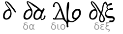
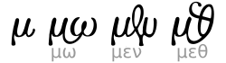
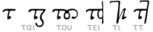

-
εῖ
εῖ (-ei-)
no cp · GSUB liga ε + ῖ (U+03B5 U+1FD6)
εἶναι · ἄειδε
GFS Gazis historical ei.per
-
γερ
γερ (-ger-)
no cp · GSUB liga/dlig γ + ε + ρ
γερουσια · γέρων
Live GrecsRoi Greek Cursive fusion (liga_ger); historical reference (Commons)
-
καὶ
καὶ (kai)
composed κ+α+ὶ · also U+03D7 ϗ / U+03CF Ϗ
καὶ ὁ λόγος
GFS Gazis kai from kappa+alpha+iota
-
μω
μω (-mō-)
no cp · GSUB liga/dlig μ + ω (U+03BC U+03C9)
μωμὸς · ὀσμωδία
Live GrecsRoi Greek Cursive fusion (liga_mo); historical reference (Commons)
-
ος
ος (-os)
no cp · GSUB liga ο + σ / ο + ς
μέθοδος · θεός
GFS Gazis omicronsigma
-
οὖν
οὖν (oûn)
no Greek cp · GSUB liga/dlig ο + ὖ + ν
οὖν ἐν ἀρχῇ
Live GrecsRoi Greek Cursive 3-letter fusion; Latin ȣ is a derived cousin. historical reference (Commons)
-
φησὶ
φησὶ (phēsi)
no cp · GSUB liga/dlig φ + η + σ + ὶ
φησὶ τοῦτο
Live GrecsRoi Greek Cursive four-letter discretionary ligature. historical reference (Commons)
-
ϛ Ϛ
stigma
U+03DB ϛ · U+03DA Ϛ
στ → ϛ · numeral 6
Didot supplies small ϛ; Gazis liga also maps σ+τ → Ϛ
-
ϗ
kai symbol
U+03D7
ϗ (= καί)
Precomposed kai; GFS Gazis cmap
-
Ϗ
kai capital
U+03CF
Ϗ
Gentium Plus unicode-range fallback
-
Ȣ
Latin OU capital
U+0222
derived from ου, not Greek
Cardo subset
-
ȣ
Latin OU small
U+0223
derived from ου, not Greek
Cardo subset
-
Ꙋ
Cyrillic UK capital
U+A64A
derived from ου, not Greek
Noto Serif subset
-
ꙋ
Cyrillic UK small
U+A64B
derived from ου, not Greek
Noto Serif subset
-
alpha pairs
no single cp · Wikimedia chart
αο · αυ · αι
Conventional minuscule ligature set
-
kappa pairs
no single cp · Wikimedia chart
κα · και
Conventional minuscule ligature set
-
rho pairs
no single cp · Wikimedia chart
ρρ · ρχ
Conventional minuscule ligature set
-
gamma pairs
no single cp · Wikimedia chart
γγ · γερ
Conventional minuscule ligature set
-
lambda pairs
no single cp · Wikimedia chart
λλ
Gazis also ligates λλ in running text
-
sigma pairs
no single cp · Wikimedia chart
στ · σσ
στ also substitutes to stigma
-

delta pairs
no single cp · Wikimedia chart
δδ
Conventional minuscule ligature set
-

mu pairs
no single cp · Wikimedia chart
μω · μν
Conventional minuscule ligature set
-

tau pairs
no single cp · Wikimedia chart
ττ · στ
Conventional minuscule ligature set
-
epsilon pairs
no single cp · Wikimedia chart
ει · εῖ
Matches Gazis ei ligature family
-
nu pairs
no single cp · Wikimedia chart
ντ · οὖν
Conventional minuscule ligature set
-
upsilon pairs
no single cp · Wikimedia chart
ου · υι
Gazis ligates ου and υι
-
eta pairs
no single cp · Wikimedia chart
ησ · φησὶ
Conventional minuscule ligature set
-
omicron pairs
no single cp · Wikimedia chart
ου · ος · οὖν
Matches Gazis ou / omicronsigma
-
phi pairs
no single cp · Wikimedia chart
φη · φησὶ
Conventional minuscule ligature set
-
theta pairs
no single cp · Wikimedia chart
θθ
Conventional minuscule ligature set
-
pi pairs
no single cp · Wikimedia chart
ππ · πρ
Conventional minuscule ligature set
-
omega pairs
no single cp · Wikimedia chart
ωμ · μω
Conventional minuscule ligature set
-
Ϝ
digamma / wau
U+03DC Ϝ
conflated with stigma as numeral 6
Archaic letter, not a ligature proper
-
ϟ Ϡ
koppa · sampi
U+03DF ϟ · U+03E0 Ϡ
numeral 90 · numeral 900
Sidebar “Ligatures” companions on Wikipedia